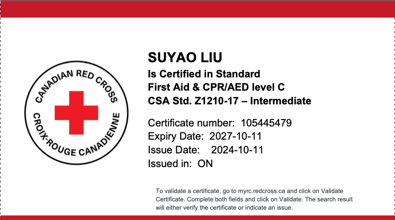
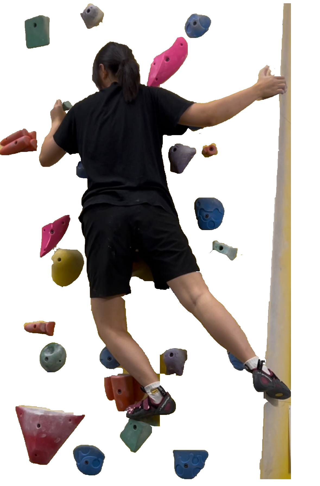
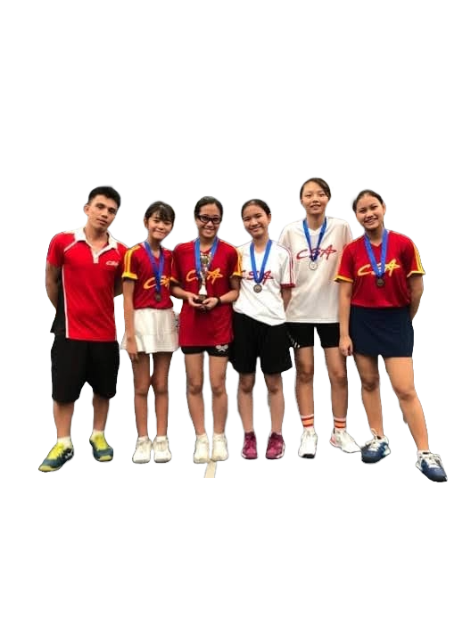
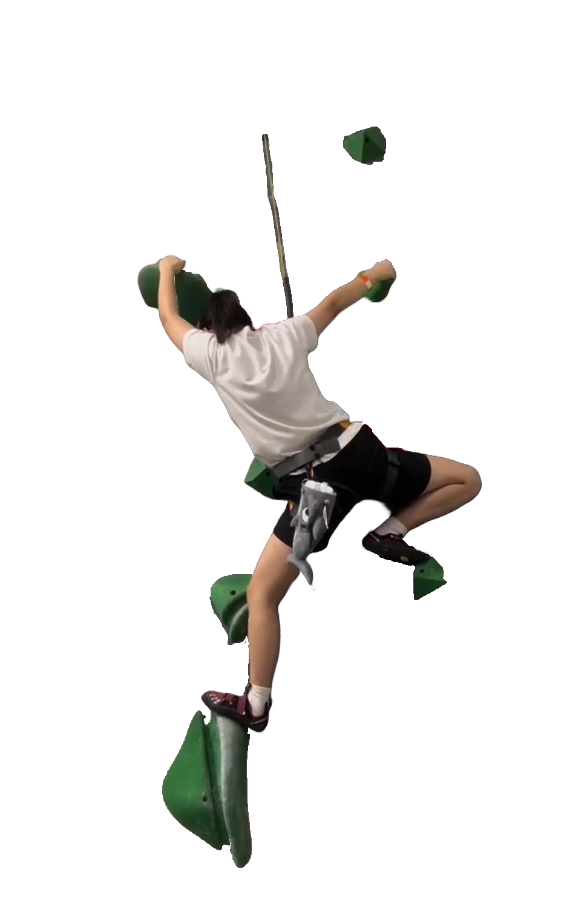
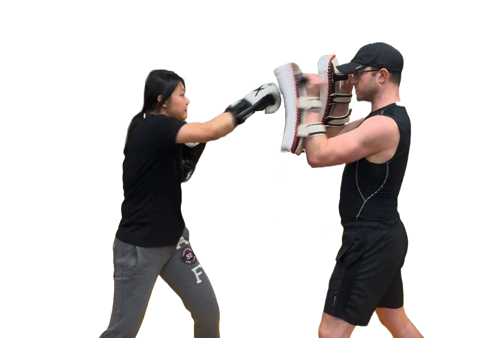
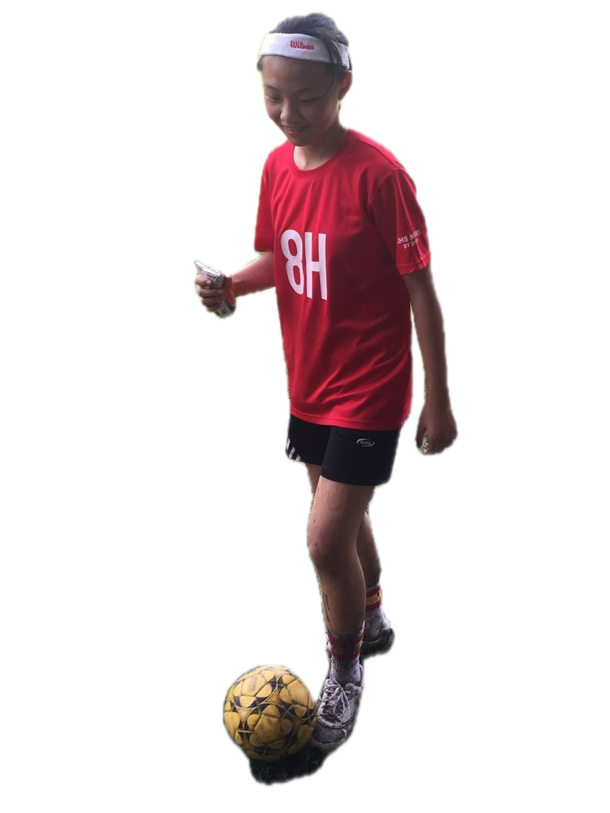

Who I am.
Hey, I'm Suyao! As a designer with a background in Global Business and Digital Arts, I bring a unique blend of creative vision and technical skill to every project. I specialize in illustration, UI/UX design, and videography, with hands-on experience in tools like Adobe Illustrator, Davinci Resolve and Figma. Whether I'm crafting sleek interfaces or producing engaging visuals, I'm passionate about creating designs that are not only visually striking but also purpose-driven.
With a love for storytelling and an eye for detail, I thrive on turning concepts into impactful designs that connect with audiences. My work is inspired by my international journey, from studying in the Philippines to immersing myself in the vibrant community at the University of Waterloo.
Certified First Aider
I'm passionate about helping others and making a positive impact in my community. In my free time, I became a certified First Aider to be better prepared in case of emergencies. I believe that even small actions can make a big difference, whether it's through my creative work or providing assistance when someone needs it most. My goal is to use my skills, both in design and first aid, to contribute meaningfully and be a reliable resource for those around me.

My Skills
Design
- UI/UX Design
- Illustration
- Brand Identity
- Graphic Design
- Frontend Coding (HTML, CSS, Java)
Software
- Adobe Creative Suite
- Figma
- DaVinci Resolve
- Squarespace
- GoDaddy
- Ticket Tailor
- JotForm
- Microsoft Office
Media
- Videography
- Photography
- Video Editing
- Storytelling
- 3D Art
My Athletic Journey
I've been passionate about sports my whole life, from playing tennis and football to practicing boxing. In high school, I was part of the tennis varsity team and proudly secured 2nd runner-up in the Interscholastic Sports Association Girls' Lawn Tennis Competition. Recently, I've found a new love in rock climbing, embracing its unique challenges. For me, sports have always been more than just physical activity—they're a way to push my limits, find focus, and maintain my mental well-being. Each sport I practice has shaped me into a stronger, more resilient person, both mentally and physically.




